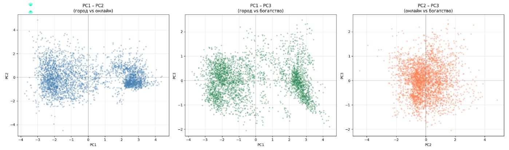

ШАГ 1 — СТАНДАРТИЗАЦИЯ И PCA
Семь признаков сжимаем до трёх осей
Километры, рубли и доли нельзя сравнивать напрямую: зарплата перевесила бы всё остальное. Приводим каждый признак к среднему 0 и отклонению 1, затем поворачиваем пространство методом главных компонент.
- 64,6%PC1 — городскость и уровень потребления: город против сельской периферии
- 12,7%PC2 — онлайн против офлайна: почти целиком доля маркетплейсов, от дохода не зависит
- 7,6%PC3 — зарплата против социальных трат на здоровье и продукты
Вместе три оси объясняют 84,9% дисперсии.
